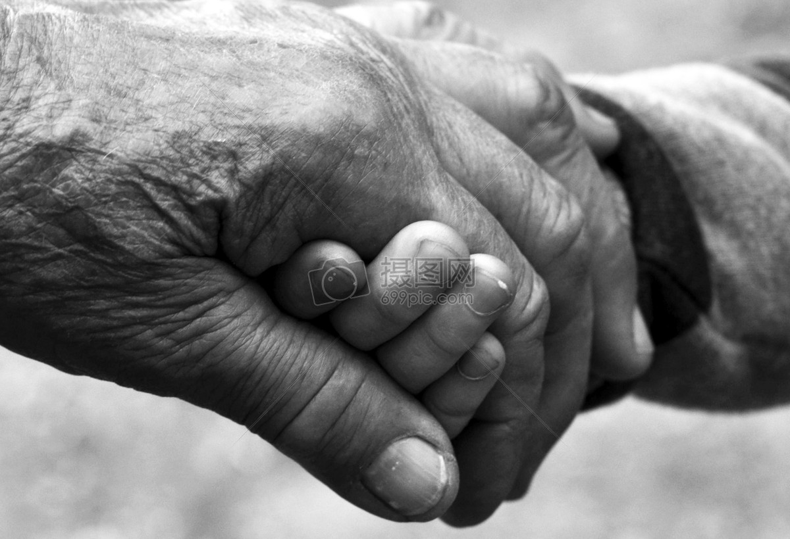
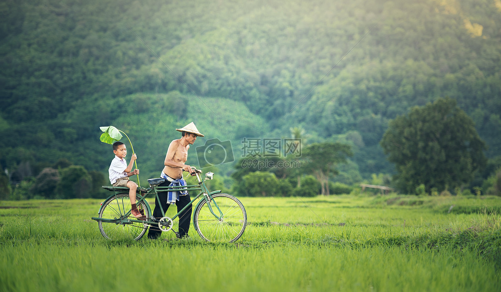

感谢有你


人的一生中,小而言之,从小时候起,就领受了父母的养育之恩,等到上学,有老师的教育之恩,工作以后,又有领导、同事的关怀、帮助之恩,年纪大了之后,又免不了要接受晚辈的赡养、照顾之恩；大而言之,作为单个的社会成员,我们都生活在一个多层次的社会大环境之中,都首先从这个大环境里获得了一定的生存条件和发展机会,也就是说,社会这个大环境是有恩于我们每个人的.感恩,说明一个人对自己与他人和社会的关系有着正确的认识；报恩,则是在这种正确认识之下产生的一种责任感.没有社会成员的感恩和报恩,很难想象一个社会能够正常发展下去.在感恩的空气中,人们对许多事情都可以平心静气；在感恩的空气中,人们可以认真、务实地从最细小的一件事做起；在感恩的空气中,人们自发地真正做到严于律已宽以待人；在感恩的空气中,人们正视错误,互相帮助；在感恩的空气中,人们将不会感到自己的孤独……
回想这些年跟您们的交流真是寥寥无几,心里想的和做的完全不一样。其实我心里都明白你们对我的宠爱,远远超过了其他父母。说实话每当跟朋友谈起父母的时候，我都感到自豪,同时感到愧疚。您们天天起早贪黑、任劳任怨的为我打拼,几乎是要什么给我买什么,有求必应。但就在这种情况下我还不感到满足,平时两句说不到一起就发脾气吵，吵完就摔门而出。
爸妈,这些年你们辛苦了,以后不要那么拼了,多注意身体,我爱你们。